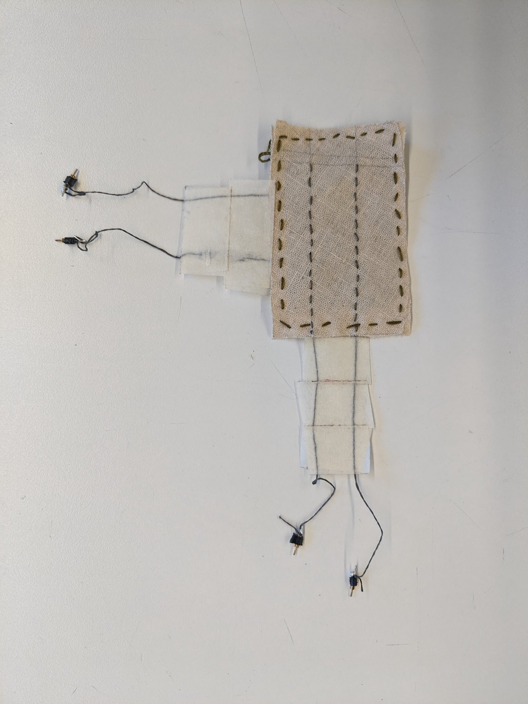

← Computational Craft | Salil Parekh
Week 5 | Sensor Swatch
I wanted to make a pressure sensitive sensor, but I wanted something with more fidelity. I knew it was possible to make something in the form of a grid, in a X-Y grid format. After some research, I realised I wanted to make what was called a Force Sensitive Resistor (FSR) grid. There are a few ways to go about it, but there aren't many concrete solutions available online. There are many pre-built solutions ready available, but difficult to find out how it's created.
My R&D attempts weren't going so well, until I found a video (after much searching!) on Youtube by a creator named Plusea, who turned out to be Hannah, one of the people behind Kobakant.
I made a small (2x2) prototype of the sensor and tried it out.

I first stencilled a grid onto the fabric and marked out where I would make a running stitch with conductive thread. The two layers, (one X-layer, and one Y-layer) would sandwich a layer of Velostat. When pressed, the conductive thread along the X-layer would make contact with a thread along the Y-layer through the Velostat, which would vary the resistivity with pressure. This meant I would get both a X-Y position as a well as a Z pressure value.
 The threads would often touch other, thus the tape was a necessity in keeping them apart
A video of the sensor in action!
The code for this is an incredibly ingenious bit of thinking, and I don't think I would've ever figured it out. As I drew out the circuit and thought of the logic to make it work, I always ended up with 2 sensor wires per contact point. It would work for sure, but at what cost?
The code Hannah shared on her website is very clever and takes advantage of the different modes on the Arduino pins. It's also efficient with only one bank needing Analog input pins. Briefly, it reads values from the Analog pins, and to detect discreet values from each point of contact from the opposite axis, it uses a for loop to sequentially set pins from pinMode(HIGH) to pinMode(LOW). So one pin is set to LOW, while others are set to HIGH. Once values are captured from the LOW wire, it is set to HIGH, and the next point is set to LOW. Simple but effective.
Satisfied with the results, I set about making a bigger 4x2 sensor.
 Running + Blanket stitch
Running + Blanket stitch
This variation had solder tipped conductive thread to make it easier for crocodile clips to hitch onto the threads.
But I couldn't quite leave it at that. The sensor worked well enough, but it didn't look right. Also 4x2 didn't sit well with me. Too narrow for my liking.
I've always wanted to work with generative art processes and textiles and I'll take any excuse to make it happen. The sharp lines of generative art are best expressed through a precision tool such as a laser cutter.


The first experimental cut looked great but it was far too ambitious. The fabric melted away on the slightest of pulls.
 Much better-thanks to more surface area
Much better-thanks to more surface area
 Finally stable, but cutting through the outer edges makes it difficult to work with
Finally stable, but cutting through the outer edges makes it difficult to work with
 Attempt no. 4 was much better. Lots of surface area, and the edges are fairly well connected
Attempt no. 4 was much better. Lots of surface area, and the edges are fairly well connected
 Sewing in stainless steel thread to create a 3x3 grid
Sewing in stainless steel thread to create a 3x3 grid
 First sensor swatch
First sensor swatch
 Second sensor swatch
Second sensor swatch
 Have you spotted the etched patterns which match the cuts?
Have you spotted the etched patterns which match the cuts?
This type of sensor reminds me of MIDI controllers, primarily because this sensor can be used as a MIDI controller, but also because of the customisability of the sensor. MIDI controllers are simple, and sometimes built by the users themselves. Some are fairly standard, but some are also very pretty simply because the creator wanted them to look nice. There's no functional advantage to making them look nicer, but it feels good to use nice looking things, so why not?
I chose patterned fabric and laser cut a generative pattern on to the sensors simple because they might be more fun to use, even though they don't add any functional value.
Previous post: Week 4 | Sensor Knitting
Next post: Week 6 | Fabricating Sensor